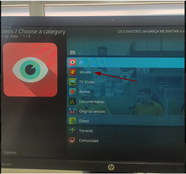
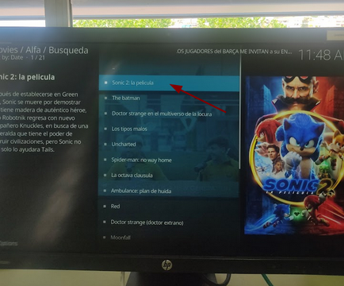
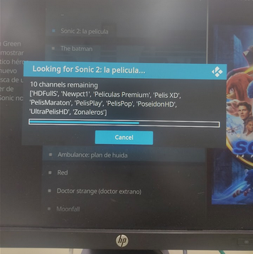

Vamos a comprobar en el apartado de movies, most popular si podemos ver alguna película.

En nuestro caso nosotros vamos a ver la película de Sonic 2.
Siempre que hagamos click en la película que queramos nos aparecerá la siguiente ventana:
Esto lo que hace es buscar entre todos los canales que tiene Alfa si está disponible esta película, se puede dar el caso de que alguna en algún momento no esté disponible.
Ahora podemos seleccionar la opción que queramos para ver la película de la lista que aparece, después habrá que seleccionar el idioma de la película. Si una no va podemos probar con otra.
Imágenes de distintas tomas de Sonic 2.